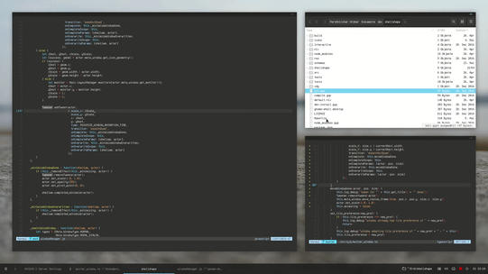

This blog post goes through the process of downloading a tiling window manager (TWM) on OS X and how it can optimize your work flow.
I recently had to start using OS X for work, and as a former linux user, I felt something missing from my workflow. OS X is often thought of as a more capable and professional linux machine, yet I still miss that ability to personalize the user experience to my liking. Sure, Linux can be finicky, but having complete control is a privilege that you adjust to real fast. So, while I can’t use Linux at work, I can cover up my problems with software that makes me feel more at home.
So - without further ado, may I present: ChunkWM.
ChunkWM is a tiling window manager, and for those of you that don’t know what that is - here … just take a look at this:
As you can see, it’s easier to watch a gif rather than read an explanation. But in essence, ChunkWM is a piece of software that manages the layout of all your windows. And while it is possible to work with ChunkWM like vanilla OS X, the more compelling aspect is the ability to navigate around windows with just your keyboard.
Installing ChunkWM is quite simple. The only thing you need before hand is homebrew and some patience.
In order to set up ChunkWM, we are going to need to install two pieces of software:
SKHD and
Homebrew-ChunkWM.
Quick overview: SKHD and is piece of software that listens to our keyboard inputs while ChunkWM is what manages how our windows are laid out. Together, they listen to our keyboard for ChunkWM commands and convert those commands into different actions on screen.
To start, the first thing that we need to do is clone the ChunkWM repository from GitHub. To do this with brew, type out:
doug@root-user$ brew tap crisidev/homebrew-chunkwm
This downloads the OS X version of ChunkWM. After cloning the repo, you should see a
chunkwm directory if you run ls /usr/local/Cellar/.
If cloning ChunkWM did not work for you, give this section a glance.
If this did work for you, well good job. Now all that is left is to install ChunkWM with:
brew install chunkwm
If all goes well when installing, you should see a message that prints something along the lines of:
Copy the example configuration into your home directory:
cp /usr/local/opt/chunkwm/share/chunkwm/examples/chunkwmrc ~/.chunkwmrc
Opening chunkwm will prompt for Accessibility API permissions. After access
has been granted, the application must be restarted with:
brew services restart chunkwm
This has to be done after every update to chunkwm, unless you codesign the
binary with self-signed certificate before restarting Create code signing
certificate named “chunkwm-cert” using Keychain Access.app
codesign -fs “chunkwm-cert” /usr/local/opt/chunkwm/bin/chunkwm
NOTE: options “--with-logging” and “--with-tmp-logging” are deprecated since now
chunkwm supports logging through configuration:
chunkc core::log_file
NOTE: plugins folder has been moved to /usr/local/opt/chunkwm/share/chunkwm/plugins
To have launchd start crisidev/chunkwm/chunkwm now and restart at login:
brew services start crisidev/chunkwm/chunkwm
Or, if you don’t want/need a background service you can just run:
chunkwm
Copy the first command and run it:
doug@root-user$ cp /usr/local/opt/chunkwm/share/chunkwm/examples/chunkwmrc ~/.chunkwmrc
This command will create a .chunkwrc file inside your home directory. Just for good measure, we are gonna want to
make sure our .chunkwmrc is executable - otherwise, ChunkWM will not run correctly. To do this, type out:
chmod +x ~/.chunkwmrc
Next, we are also going to want to system link the plugins folder to our home directory. Note - this isn’t necessary in the latest build, but we’re going to do this just for good measure.
doug@root-user$ ln -sf /usr/local/opt/chunkwm/share/chunkwm/plugins ~/.chunkwm_plugins
Good job! You’ve installed chunkwm. To make sure everything was done correctly, running ChunkWM
should result in windows auto-scaling to your screen. To test this, type out:
brew services start chunkwm. Doing this should bring up an OS X prompt asking you to
allow for ChunkWM to be apart of the accessibility list. Allow ChunkWM to be in your accessibility
list. Once you do so, restart ChunkWM by typing: brew services restart chunkwm
After doing so, any program you open should look like this:
[IMAGE of CHUNKWM]
If you’ve made it this far, the hard part is over! All that is left is to install SKHD. To do this, run:
brew install koekeishiya/formulae/skhd
And just like before, brew is going to output a message:
From this message, we are going to run:
doug@root-user$ cp /usr/local/Cellar/skhd/examples/skhdrc ~/.skhdrc
And just like before, to start running SKHD, we are going to run: brew services start skhd.
This will again prompt you to add SKHD to your accessibility list - do so and restart SKHD with:
brew services restart skhd If all goes well, you should be able to
rotate two or more windows with the following command: option + r.
If installing SKHD didn't work, check that you copied the .skhdrc file correctly and that
SKHD is in your accessibility list. If that doesn't fix the issue, the